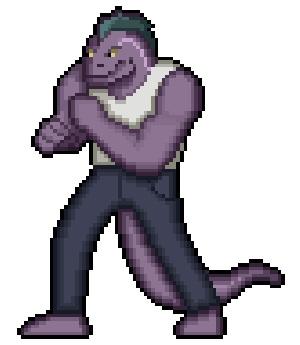
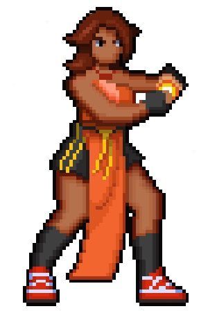
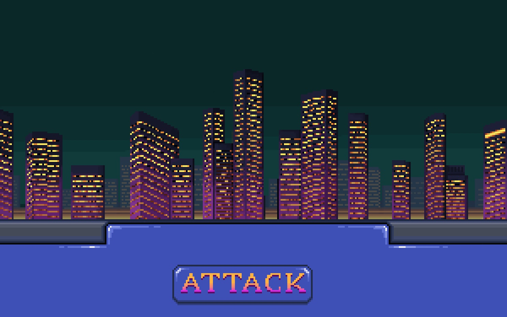
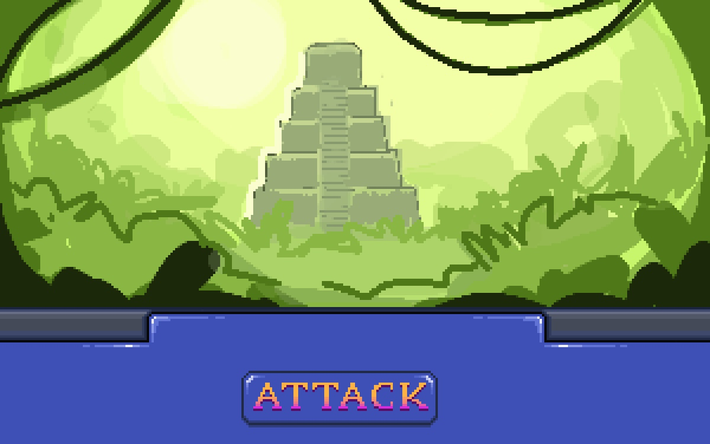

These new visual designs add another layer of detail to the stage and characters already included in Studio 3.
To begin with, I rounded out character sprites with complete shading/rendering to make them more realistic, and so that they fit in with the more detailed background behind them. Although I didn't include them here, I plan on making several versions of the same sprite for animations in their movesets.
Next, I developed the UI a little further, adding a large hand-drawn "ATTACK" button that matches the text included in the original Street Fighter.
Finally, I added an example of an extra stage that the program will randomly pick as the fight begins. I chose a jungle-like theme to contrast against the city backdrop used in the original design.
   